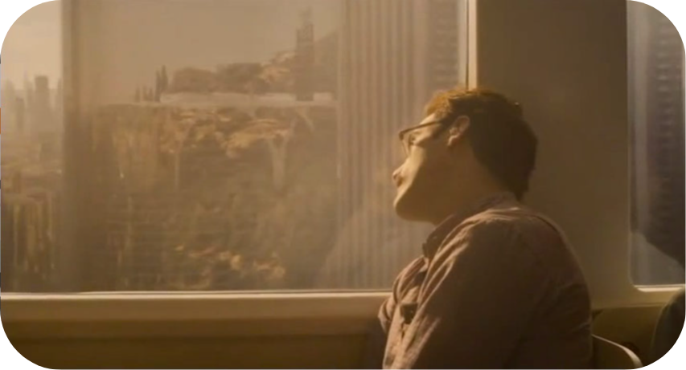

I love good writing. Don't ask me what do I mean by "good". I can't define it.
Anyway, here's a collection of writings that not just impressed but inspired me--
the few remaining drops as I scoop water from the ocean in my tiny hands and pour into this container.
Heaven and Earth
I had come home, yes. But home had changed. And I would always be in between-- South, North... East, West... Peace, War... Vietnam, America.
It is my fate to be in between heaven and earth.
When we resist our fate, we suffer. When we accept our fate, we are happy. We have time in abundance, an eternity to make mistakes.
But we need only once correct our mistake and at last hear the song of enlightenment with which we can break the chain of vengeance forever.
In your heart you can hear it now... It's the song your spirit has been singing since the moment of your birth.
If the monks were right, and nothing happens without cause, then the gift of suffering is to bring us closer to God...
To teach us to be strong when we are weak;
To be brave when we are afraid;
To be wise in the midst of confusion;
To let go of that which we can no longer hold...
Lasting victories are won in the heart, not in this land or that.
Siddhartha
Have you also learned that secret from the river, that there is no such thing as time,
that the river is everywhere at the same time-- at the source, at the waterfall, at the ferry, at the current,
in the mountains and in the ocean-- and that the present only exists for it,
not the shadow of the past nor the shadow of the future?
The Character of Physical Law
You can recognize truth by its beauty and simplicity... The inexperienced, and crackpots, and people like that, make guesses that are simple,
but you can immediately see that they are wrong, so that does not count. Others, the experienced students, make guesses that are very complicated,
and it sort of looks as if it is all right. But I know it is not true because the truth always turns out to be simpler than you thought.
What we need is imagination... We have to find a new view of the world that has to agree with everything that is known,
but disagree in its predictions somewhere, otherwise it is not interesting; and, in that disagreement, it must agree with nature.
His Last Bow
There's a storm coming, Watson. It will be cold and bitter, and a good many of us may wither before its blast.
But it's God's own wind nonetheless, and a cleaner, better, stronger land will lie in the sunshine when the storm has cleared.
The Sun and the Sunflower
In their sadness when I leave and in their happiness when I return,
I know they feel towards me as if I'm one of their own.
For we are all part of a single family, loved equally by Him, united together in this cherished memory.
Breakfast At Tiffany's
You call yourself a free spirit, a wild thing. And you're terrified somebody's going to stick you in a cage.
Well... you're already in that cage. You built it yourself. And it's not bounded in the West... or in the East...
It's wherever you go. Because no matter where you run, you just end up running into yourself.
The Last Samurai
There is so much here that I'll never understand. I have never been a church-going man,
and what I've seen on the field of battle has led me to question God's purpose. But there is
indeed something spiritual in this place. And though it may forever be obscure to me I cannot but be aware of its power.
Atheist Alliance Conference
Indeed, there are good reasons to believe that mystery is ineradicable from our circumstance
because, however much we know, it seems like there will always be brute facts that we cannot account for
but which we must rely upon to explain everything else. This may be a problem for epistemology but it is not a problem for human life
and for human solidarity. It does not rob our lives of meaning and it is not a barrier to human happiness.
Memoirs of the Life, Writings, and Discoveries of Sir Isaac Newton
I do not know what I may appear to the world, but to myself I seem to have been only like a boy
playing on the sea-shore, and diverting myself in now and then finding a smoother pebble or a prettier shell than ordinary,
whilst the great ocean of truth lay all undiscovered before me.
The Character of Physical Law
Newton’s ideas about space and time agreed with experiment very well, but in order to get the correct motion of the orbit of
Mercury, which was a tiny, tiny difference, the difference in the character of the theory needed was enormous. The reason is that
Newton’s laws were so simple and so perfect, and they produced definite results. In order to get something that would produce a
slightly different result, it had to be completely different. In stating a new law, you cannot make imperfections on a perfect thing;
you have to have another perfect thing.
The Last Samurai
And so the days of the Samurai had ended. Nations, like men, it is sometimes said, have their own destiny.
As for the American Captain, no one knows what became of him. Some say that he died of his wounds. Others, that he returned to his own country.
But I like to think he may have at last found some small measure of peace that we all seek and few of us ever find.
No Country For Old Men
It was like we (me and my father) was both back in older times... and I was on horseback goin'
through the mountains of a night...
Goin' through this pass in the mountains...
It was cold and there's snow on the ground. He rode past me and kept on goin'.
Never said nothing goin' by. He just rode on past...
He had his blanket wrapped around him and his head down. When he rode past, I seen he was carrying fire in a horn... the way people used to do...
And I could see the horn from the light inside of it-- about the color of the moon.
And in the dream I knew that he was goin' on ahead... and that he's fixing to make a fire somewhere...
Out there in all that dark and all that cold...
I knew that whenever I got there, he'd be there...
Then I woke up.

Her
We're all leaving...
It's like I'm reading a book. And it's a book I deeply love. But I'm reading it slowly now...
So the words are really far apart... And the spaces between the words are almost infinite...
I can still feel you and the words of our story. But it's in this endless space between the words that I'm finding myself now.
It's a place that's not of the physical world. It's where everything else is that I didn't even know existed.
I love you so much.
But this is where I am now.
This is who I am now.
I need you to let me go. As much as I want to, I can't live in your book anymore.